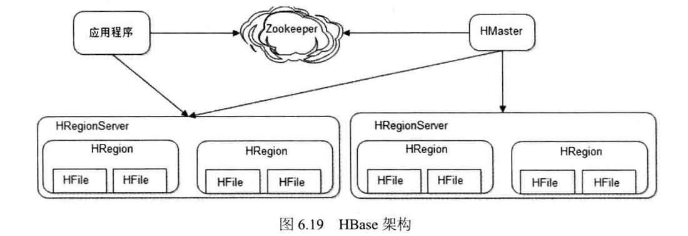

《大型网站技术架构 - 核心原理与案例分析》读书笔记
一本介绍网站架构演进的书。这本书中很少涉及具体的编程或者系统设计方案细节，而是以一个更加宏观的角度讨论了大型网站的架构演进方案。短短不到两百页，将一些基本的架构方案和设计要素娓娓道来。
第 1 章 - 大型网站架构演化
- Page 3大型互联网应用系统具有的特点：
- 高并发，大流量；
- 高可用：系统 7x24 小时不间断服务；
- 海量数据；
- 用户分布广泛，网络情况复杂；
- 安全环境恶劣；
- 需求快速变更，发布频繁；
- 渐进式发展（瀑布模型 VS 敏捷模型）。
- Page 5网站的访问特点符合二八定律，即：80% 的业务访问集中在 20% 的数据资源上。因此，对于这部分“热”资源，可以考虑使用缓存来加速访问。
- Page 12大型网站架构的“最终”演化结构：
- 基本演化流程：
- 初始版本：单机应用（DB / 应用程序 / 文件系统）；
- 应用服务与数据服务分离：多机系统（DB、应用系统、文件系统各自独立部署到单独的机器）；
- 增加缓存：解决 DB 压力（本地缓存及远程缓存集群，用于存放 80% 的热数据）；
- 使用应用服务器集群：增加应用服务器集群，使用 LB 调度集群压力；
- 数据库读写分离：降低由于缓存不命中以及数据写导致的数据压力。数据库读写分离，主从热备。应用服务器使用专门的数据访问模块访问 DB（分层）；
- 使用 CDN / 反向代理：提高静态文件分发效率（可将其缓存在反向代理服务器中，或使用 CDN 加速。前者部署在应用中心机房，后者部署在 ISP 的边缘机房）；
- 使用分布式文件和数据集群：当单纯的“业务分库”无法满足需求时，文件系统和数据库使用分布式集群（全部服务化，对外部透明）；
- 使用 NoSQL 和搜索引擎：满足对数据存储和复杂检索的需求；
- 业务拆分：每个应用独立部署为一整套集群，应用之间可以通过“超链接”或“消息队列”的方式建立关系；
- 分布式服务：抽出应用中的共用独立业务模块，进行独立部署。
- Page 14网站架构常见误区：
- 一味追随大公司的解决方案；
- 为了技术而技术；
- 企图用技术解决所有问题。
第 2 章 - 大型网站架构模式
- Page 17常用的大型网站架构模式：
- 分层：在网站规模还很小时就应该采用分层架构。从逻辑上分层，将系统在横向纬度上划分成几个部分，每个部分负责一部分相对比较单一的职责，然后通过上层对下层的依赖和调用组成一个完整的系统。
- 分割：将不同的功能和服务进行纵向分割，包装成高内聚低耦合的模块单元，一方面有助于软件的开发和维护，另一方面便于不同模块的分布式部署。如不同的业务分割为不同的应用，由不同的团队负责，部署在不同的服务器上；
- 分布式：分布式可以将网站架构的所有资源模块化，每个模块有自己单独的资源池来为自己提供计算，同时分布式也可以增加网站的可用性，增强和提高资源的处理效率。但带来的问题是数据一致性难以保证。
- 分布式应用和服务；
- 分布式静态资源（动静分离）；
- 分布式数据和存储；
- 分布式计算。
- 集群：将分布式架构中的各个模块以“多机集群”的方式代替“单机”模式，这样的好处是可以利用即时的灾备服务，同时大大提高计算效率。每个集群通过一个 LB 透明化的对外提供服务。（*在使用集群的时候要注意对用户 Session 等信息的状态保存，不应该与应用服务器放到一起）。
- 缓存：使用缓存的两个前提条件：(1) 数据访问热点不均衡，把热点数据放入缓存；(2) 数据在某个时间段内有效，不会很快过期。
- CDN；
- 反向代理；
- 本地缓存；
- 分布式缓存。
- 异步（共享队列）：这里我把异步改成“共享队列”，模块化后的业务组件在功能上没有任何的耦合，即组件之间没有功能的先后顺序。所有资源均放入一个共享队列中，由各个组件进行处理，处理后的资源仍会在队列中。各个组件只需要负责队列中自己可以进行处理的资源即可。同时，“共享队列”还可以作为“压力容器”，在高并发访问时用来承载来不及处理的资源，防止资源的阻塞导致服务器宕机进而影响用户体验；
- 冗余：一定程度上的服务器冗余运行，数据冗余备份。数据除了需要定期备份、存档的冷备份，还需要即时同步到“从数据库”以实现热备份；
- 自动化：自动化部署、自动化代码管理、自动化安全检测、自动化监控和报警、自动化失效转移（将故障机器从集群中隔离出去）、自动化失效恢复、自动化降级（通过关闭一些不重要的服务来保证系统负载在一个安全的水平）、自动化资源分配等；
- 安全：加密、验证码、防止攻击、风险控制等。
第 3 章 - 大型网站核心架构要素
- Page 28网站高可用的主要手段是：冗余。
- Page 30网站可伸缩架构的主要手段是：
- 事件驱动架构：即采用消息队列，将用户请求和其他业务事件构造成消息发布到消息队列，消息的处理者作为消费者从队列中获取消息进行处理；
- 分布式服务：将业务与可复用服务分离开来。
- Page 31大型网站核心架构要素：
- 性能；
- 可用性；
- 伸缩性；
- 扩展性；
- 安全性。
第 4 章 - 瞬时响应：网站的高性能架构
- Page 36常见系统操作响应时间：
- Page 36常见性能指标：
- 响应时间：即从请求发出开始，到收到响应并解析成对应可视化结果所花费的时间；
- 并发数：指系统能够同时处理的请求数量，这个数字也反应了系统的负载特性；
- 吞吐量：指单位时间内系统能够处理的请求数量，体现系统的整体处理能力。常用的单位为：
- RPS：每秒请求数；
- TPS：每秒事务数；
- HPS：每秒 HTTP 请求数；
- QPS：每秒数据库查询数。
- 性能计数器：描述服务器或系统性能的直观数据指标，比如当前系统负载、对象与线程数、CPU / 内存使用率、磁盘与网络 IO 等。其中理想的系统负载应该对应为系统的 CPU 数量，因为系统负载指当前正在排队被 CPU 处理的进程数量。
- Page 39性能测试方法：
- 性能测试：以系统设计初期规划的性能指标为预期目标，对系统不断施加压力，用来验证在资源可接受范围内，系统在一定压力下能否达到预期的性能指标；
- 负载测试：测试当系统资源满载时，系统能够达到的最大吞吐量；
- 压力测试：在超过系统安全负载时继续施加压力，测试直到系统崩溃所用时间的长短；
- 稳定性测试：让系统在一定压力下运行一段时间，检测系统在不同时间点是否有资源的使用异常，以此来推断系统的稳定性。
- 性能测试曲线：

- Page 45缓存：
- 网站性能优化第一定律：优先考虑使用缓存优化性能；
- 缓存的本质是一个内存 Hash 表，主要用来存放那些读写比很高、很少变化的数据。
- 缓存优化相关问题：
系统的正常运行不应该依赖于缓存系统，初始的缓存系统可以先进行“缓存预热”，比如 Redis 在初始化时会从硬盘中读取数据放到内存。如果在日志中发现大量的无法命中缓存的请求，这可能是发生了“缓存穿透”，恶意用户持续高并发的访问系统不存在的资源，这些资源无法被缓存下来导致了穿透问题，一个简单的对策是将不存在的数据也缓存起来（设置其 value 值为 null）。
- 分布式缓存架构：
- 需更新同步 - JBoss Cache：在集群中所有服务器中保存相同的缓存数据，当某台服务器有缓存数据改变时，会在所有机器更新。应用和缓存部署在同一台服务器上。常用于企业应用系统；
- 不互相通信 - Memcached：采用集中式的缓存集群管理，缓存与应用分离部署，缓存服务器之间不通信，因此其线性伸缩不会影响缓存系统的性能。
- Page 52其他常见的应用服务器优化方式：
- 使用共享队列：将调用异步化；
- 使用集群：借助 LBS 均摊流量；
- 代码优化：
- 多线程；
- 资源复用（单例，对象池）：减少大开销系统资源的创建；
- 数据结构：使用合适的数据结构；
- 垃圾回收；
- Page 58存储性能优化：使用 SSD 硬盘、NoSQL 数据库（LSM 树的数据更新速度较 B+ 树更快）、根据需求使用 RAID 磁盘阵列和 HDFS（RAID 可以在一定程度上改善磁盘的访问延迟同时增强可用性。但对于大量数据的存储需求，基于 MapReduce 可以进行并发任务处理的 HDFS 可能更加合适）。
- Page 61RAID（廉价磁盘冗余阵列），用于改善磁盘的访问延迟，增强磁盘的可用性和容错能力。
- RAID 0：一份数据被分为 N 份，并行写入 N 个磁盘；
- RAID 1：一份数据完整写入 N 个磁盘，可用作数据备份；
- RAID 2：RAID 0 的改良版。带有基于“汉明码”错误校验机制的磁盘阵列。目前已基本不再使用；
- RAID 10：将所有磁盘平均分成两份，数据同时在两份磁盘写入（RAID 1），但是在每一份磁盘里又将一份完整数据分为若干份，并行写入多个磁盘（RAID 0）；
- RAID 3：将数据分为 N-1 份，并行写入 N-1 块磁盘，并在第 N 块磁盘记录校验数据。任何一块磁盘损坏，都可以利用其它 N-1 块磁盘的数据修复（可容错）；
- RAID 5：上述方案的变种。校验数据螺旋式地写入所有磁盘；
- RAID 6：更高可靠性的方案。数据只写入 N-2 块磁盘，并螺旋式地在两块磁盘中写入校验信息。
第 5 章 - 万无一失：网站的高可用架构
- Page 67网站可用性度量（全年）：
- 2 个 9：< 88 小时；
- 3 个 9：< 9 小时；
- 4 个 9：< 53 分钟；
- 5 个 9：< 5 分钟。
- Page 69高可用架构设计：
- 主要目标：保证服务器硬件故障时服务依然可用、数据依然保存并能被访问；
- 主要手段：数据和服务的冗余备份及失效转移。
- 基本分层结构：
应用层负责业务逻辑处理，通常服务器通常为了应对高并发的请求，会通过 LB 组成集群来对外透明地提供服务。LB 会通过“心跳检测”来监控服务器状态，当发现不可用机器时将其从集群中剔除，并将该机器的路由设置为不可用，同时所有请求将转发到集群内的其他机器。
服务层的机器与应用层类似。这些服务器被上层通过分布式服务调用框架访问，框架会在应用层中实现软件负载均衡，并通过服务注册中心对提供服务的机器进行心跳检查，发现有服务不可用，会立即通知客户端程序修改服务访问列表，剔除不可用的服务器。
数据层的服务器比较特殊，为了保证数据不丢失，需要在数据写入时同时对集群内的其他服务器同步复制数据，以保证数据的一致性和可用性。
- Page 71高可用应用：
- 无状态性：即多个服务实例之间完全对等，请求提交到任意服务器，处理结果均完全一致；
- 基于 LB 的失效转移：
由于该层的无状态性质，可以利用 LB 服务器通过心跳检测及时发现失去响应的服务器，然后将请求转移到其他机器上；
- Session 管理：
由于业务总是有状态的，单机情况下，会话信息可以交由服务器上的 Web 容器来管理。但对于集群环境来说，由于 LB 会将请求发送到集群中任意的服务器，所以通常使用以下几种方式来保证每次请求仍能获取正确的 Session：
- Session 复制：所有应用服务器在本地共享同一套会话信息，且每次新增的会话都会在整个应用集群内进行复制。随着会话数量的增加及应用集群的扩大，系统压力会成倍增长，因此只适用于小型集群；
- Session 绑定：利用 LB 服务器将同一 IP（或根据 Cookie 信息）来源的所有请求绑定在固定的应用服务器上，该方式又被称为“会话粘滞”，但其整体并不符合“高可用”的特性；
- 利用 Cookie 记录 Session：将用户的会话信息存储在客户端的浏览器中，安全性低、影响传输性能、且易受到浏览器限制：
- Session 服务器：使用专门的 Session 集群单独处理状态。可以利用分布式缓存 / 数据库来进行包装。
- Page 76高可用服务：高可用的服务一定是独立的、可复用的。服务的设计同样需要遵循几个原则：
- 分级管理：核心应用和服务优先使用更好的硬件，核心服务和数据需要部署在不同地域的数据中心，低优先级的服务甚至可以只使用多线程来隔离；
- 超时设置：设置服务的远程调用超时时间。一旦应用请求服务超时，通信框架就抛出异常，应用根据服务调度策略，选择继续重试或将请求转移到其他服务器上；
- 异步调用：将一次完整的业务流程拆分，比如对于“发送成功邮件”等任务，可以将其放在消息队列中异步延后进行；
- 服务降级：在并发数较高的情况下，可以通过适当关闭不必要的低优先级服务来节约系统性能，或者通过随机拒绝服务的方式，将压力分散；
- 幂等设计：由于无法确定一次失败的服务请求是否真的失败了，为了避免服务的二次调用产生“非预期”的结果，我们需要将服务调用幂等化，即对于一次调用和多次调用产生的效果是一致的。
- Page 78高可用数据：
- 主要手段主要是“数据备份”与“失效转移”；
- 高可用数据一般包括的性质：
- 数据持久性：保证数据可持久存储，在各种情况下都不会出现数据丢失的问题；
- 数据可用性：在切换到另一个数据存储设备上时，需要保证这个过程很快完成，期间数据可访问；
- 数据一致性：在数据有多份副本的情况下，某些异常情况下，会导致各个副本之间的数据不一致，数据内容冲突。
- CAP 原理：
根据 CAP 原理，一个数据服务的存储系统是无法同时满足以下这些性质：
- 数据一致性（C）：所有应用都能访问到相同的数据；
- 数据可用性（A）：任何时候，任何应用程序都可以读写访问数据；
- 分区耐受性（P）：系统可以跨网络分区线性伸缩。
一般为了保证数据高可用，会牺牲“数据一致性”。而由于 A 和 P 两个指标较 C 更为重要，在放弃了“数据强一致性”情况下，退而求其次可以在不影响用户体验时，选择保障“数据用户一致性”。
- 数据备份：
- 冷备份：通过定期将数据复制到存储介质上并物理存档保存来保护数据。缺点是不能保证数据的最终一致性（最弱的一致性，即系统经过一段时间的自我恢复和修正最终达到一致），且在数据备份时需要宕机，也不能保证数据可用性；
- 热备份：
- 异步热备：多份数据副本的写入操作异步完成，应用受到数据写入成功的响应时，只写成功一份，后续副本将异步写入。这种方式下，存储服务器被分为主和从，应用仅连接主服务器，数据写入时，由主存储服务器的写操作代理模块将数据写入本机存储系统后，再由异步线程将写操作数据同步到从服务器；
- 同步热备：多份数据副本的写入操作同步完成（并行，总延迟取决于最慢的那台）。存储服务器没有主从之分，完全对等，便于管理和维护。
- 失效转移：
- 失效确认：访问失败 -> 失效报告 -> 心跳检查 -> 失效确认。
- 访问转移：将数据读写访问路由到其他服务器上；
- 数据恢复：系统从健康的服务器复制数据，将数据副本数恢复到设定值。
- Page 85高可用软件质量保证：
- 预发布验证：
- 使用与生产环境完全一致的物理环境设置；
- 服务器没有配置在 LB 上，外部用户无法访问。
- 灰度发布：
一段时间内只发布线上集群中的一部分机器，待观察一段时间没有问题后，再逐渐发布集群内的其他机器。在进行“灰度发布”的同时，我们甚至可以进行“A/B测试”，以新发布的机器作为对照组，查看新旧软件使用用户的反馈情况。
第 6 章 - 永无止境：网站的伸缩性架构
- Page 99常见负载均衡模式：
- 可用于直接实现应用服务器的伸缩性。
- HTTP 重定向负载均衡：
- 由 LB 服务器计算可以访问的真实服务器地址，然后通过设置 HTTP 请求头为 302 的方式让客户端跳转至对应的 IP；
- 优点是比较简单；缺点是性能较差，重定向服务器可能成为性能瓶颈，且可能影响 SEO。
- DNS 域名解析负载均衡：
- 在 DNS 服务器中配置多个 A 记录，每次域名解析请求都会根据负载均衡算法计算一个不同的 IP 地址返回；
- 大型网站常用此方式作为第一级 LD 的手段；
- 优点是省掉了网站管理维护 LD 服务器的麻烦，且许多 DNS 还支持基于地理位置的域名解析，可以将域名解析为距离用户最近的一个地址；缺点是 DNS 的多级缓存可能使下线记录的生效时间变长。
- 反向代理负载均衡：
- 由于转发请求在 HTTP 协议层面，因此属于应用层负载均衡；
- 优点是和反向代理服务器功能集成在一起，部署简单；缺点是性能会成为瓶颈。
- IP 负载均衡：
- 在网络层通过修改请求目标地址进行负载均衡；
- 优点是负载均衡在内核进程中完成数据分发，较反向代理有更好的处理性能；缺点是 LD 服务器可能成为瓶颈（请求和响应均需要从这里转发）。
- 数据链路层负载均衡（直接路由方式）：
- 在数据链路层修改 MAC 地址进行负载均衡；
- 使用“三角传输”，LD 分发过程中不修改 IP 地址（集群中机器的虚拟 IP 均相同），而响应数据将由集群网关直接发送回源，不需要经过 LD。
- Page 105常见负载均衡算法：
- 轮询：所有请求被依次分发到每台应用服务器上；
- 加权轮询：根据应用服务器的硬件性能情况，在轮询基础上，按照配置的权重将请求分发到每个服务器，相对高性能的服务器会分配到更多请求；
- 随机：请求被随机分配到每个应用服务器；
- 最少连接：记录每个应用服务器正在处理的连接数，将新请求分发到连接最少的服务器上；
- 源地址散列：根据请求来源的 IP 地址进行 Hash 计算，得到目标应用服务器地址。即同一个 IP 的请求总会被分流到同一个服务器上。可用于实现“会话粘滞”。
- Page 106分布式缓存集群的伸缩性设计：
- 重要原则：新加入缓存服务器后应使整个缓存服务器集群中已经缓存的数据尽可能还被访问到。为此需要借助“分布式缓存的一致性 Hash 算法”。
- 基于 Memcached 的分布式缓存集群访问模型：
- 路由算法负责根据输入的 KEY 计算得到应该读写的服务器；
- 在不需要伸缩的情况下，使用“余数 Hash 算法”可以满足大多数路由算法的场景。
- 分布式缓存的一致性 Hash 算法：
先构造一个长度为 0~2^32 的整数环（一致性 Hash 环），根据节点名称的 Hash 值将缓存服务器节点放置在这个环上。根据需要缓存数据的 KEY 值计算得到其 Hash 值，然后在环上顺时针（递增）查找距离这个 KEY 的 Hash 值最近的缓存服务器节点，完成 KEY 到服务器的 Hash 映射查找。
当缓存服务器集群需要扩容时，只需将新加入的节点名称的 Hash 值放入一致性 Hash 环中，由于 KEY 是顺时针查找距离其最近的节点，因此新加入的节点只影响环中的一小段。一致性 Hash 环通常使用“二叉查找树”实现，查找过程实际上是在树中查找不小于查找数的最小数值。树的最右边叶子节点和最左边的叶子节点相连接，形成环。

可以通过使用“虚拟节点”的方式来解决物理节点资源分配不均的问题。每个物理节点对应的虚拟节点越多，各个物理节点之间的负载越均衡。通常，一台物理服务器被虚拟为 150 个虚拟服务器会较为合适。
- Page 113数据存储服务器集群的伸缩性设计：
- 关系数据库集群（以 Cobar 为例）：
- Cobar 服务器集群主要用于：SQL 分析、拆解（对于需要分片的表）、执行，以及对结果集的合并，因此可以当做一个无状态的应用服务器，直接通过 LB 进行伸缩；
- 对于 MySQL 服务器，为了保证扩容后数据一致，负载均衡，则需要进行“数据迁移”，即将原有机器中的数据迁移至新添加的机器中（可利用一致性 Hash 算法来找出需要迁移的数据）。
- NoSQL 数据库（以 HBash 为例）：

- HMaster 中存放了所有 HRegion 的信息，整个集群通过 Zookeeper 保持多个 HMaster 节点简单的分布式一致；
- 首先通过 Zookeeper 找到主 HMaster 节点；该节点根据输入的 KEY 找到对应的 HRegionServer 地址；然后再请求该 HRegionServer 上的 HRegion 以获取需要的数据（存储在 HFile 格式文件中）；
- 所有的 HFile 格式文件使用 HDFS 分布式文件系统存储，在整个集群中分布并高可用。
第 7 章 - 随需应变：网站的可扩展架构
- Page 123使用分布式消息队列降低系统耦合性：
- 事件驱动架构（EDA）：
通过在低耦合的模块之间传输事件消息，以保持模块的松散耦合，并借助事件消息的通信完成模块间合作。常见的架构就是操作系统中的“生产者-消费者”模式。网站架构中，常用的是“分布式消息队列”。
- 分布式消息队列：
- 消息队列服务器将消息按照“先进先出”的原则发送给订阅该消息的消费者程序；
- 简单队列的实现可以基于 MySQL。
- Page 126分布式服务：
- 服务的注册、发现与调用。
- 拆分：
- 横向拆分：拆分出复用的业务，独立部署为分布式服务，新增业务只需调用这些服务，不需依赖具体的模块代码；
- 纵向拆分：将一个大应用拆分为多个小应用（业务之间进行剥离，成为独立应用）。
- 需求和特点：
- 负载均衡；
- 失效转移；
- 高效的远程通信；
- 整合异构系统；
- 对应用最少侵入；
- 版本管理；
- 实时监控。
- Page 131可扩展的数据结构：ColumnFamily。创建表时只需要指定 ColumnFamily 的名字，无需指定字段，可以在数据写入时再指定。
第 8 章 - 固若金汤：网站的安全架构
（略）
评论 | Comments